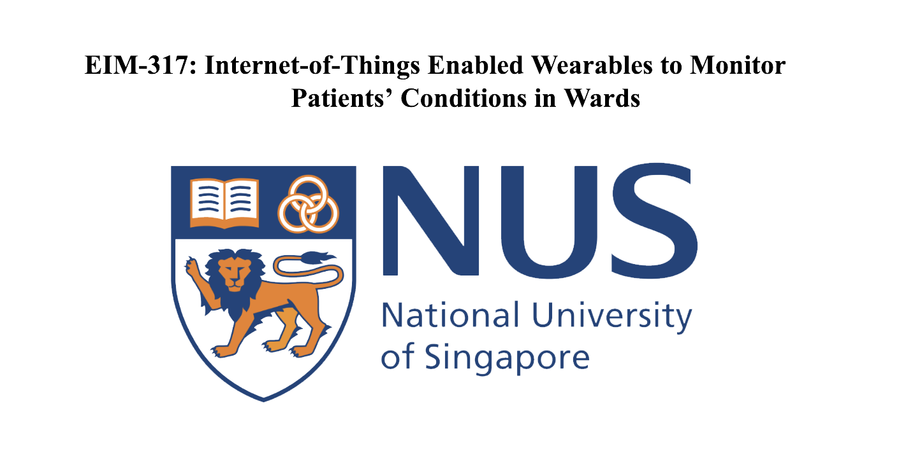
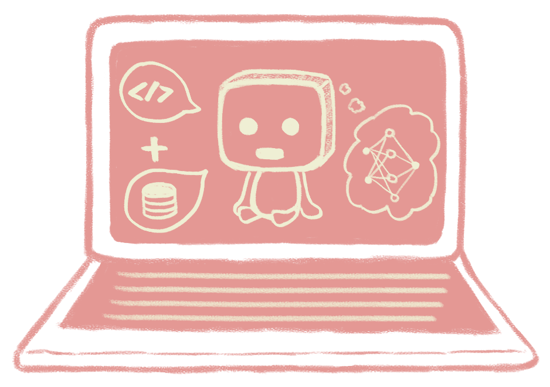

This is a list of projects that I have worked on. Some are
individual projects while others are done in a small group of 2 -
4.
I have included a short summary of the project objectives together
with their Technology Stacks (the software behind the product) and
Design Stacks (what was used to design the images/logos/characters
in the product). Being an avid lover of drawing and designing, I
am heavily involved behind the UI/UX designs of all the
products.
Tip: Click on the images in the project cards to view my GitHub repositories or more information about the project!
SoCiety
A Unity game designed for School of Computing freshmen to help
them familiarise with the campus layout.
Tech Stack:
Unity(C#), Firebase
Design Stack: Adobe Photoshop,
Premiere Pro
Sugar for Leo Bot

A python telegram bot built to faciliate the annual
Angel-and-Mortal event in the House of Leo.
Tech Stack:
Python, Heroku
Design Stack: Adobe Photoshop
CardiBuddy
A flash cards application that allows students to generate their
own flash cards and test themselves through a simple Command Line
Interface.
Tech Stack: Java, JavaFX
Design Stack:
Balsamiq, Adobe Photoshop, XD
COVID-19 Bot

A python telegram bot built to help limit the number of people in
the dining hall in the face of the COVID-19 situation.
Tech Stack:
Python, Heroku
Design Stack: Adobe Photoshop
EIM-317

A year-long project, in collaboration with the National University
Hospital, to produce novel IoT-enabled ECG and Respiratory
sensors.
Tech Stack: MongoDB, Express.js, React,
Node.js
Design Stack: Adobe
Photoshop, Premiere Pro, XD
Archive: FALDET - A Fall Detector for the Elderly
A fall detector built to inform caregivers when an elderly user
falls down.
Tech Stack: Arduino
Design Stack:
Microsoft Powerpoint
Miscellaneous: The Other Portfolio

As the name suggests. There's actually nothing to see here unless
you want to be drowned in pink.
Tech Stack: Vue.js,
Netlify
Design Stack: Adobe Photoshop